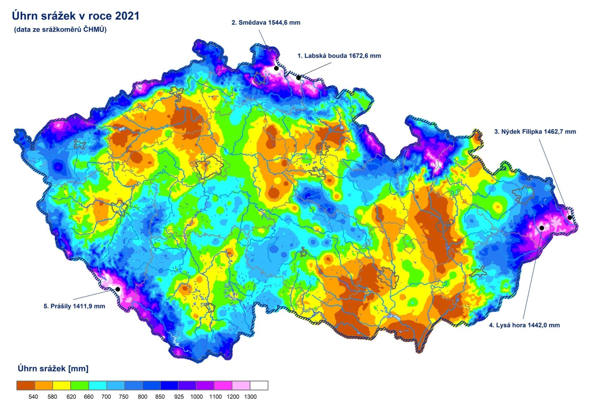

Průměrná teplota celoročně: 8,4°C
Průměrná teplota v zimě: -1,8°C
Průměrná teplota v létě: 18°C
Průměrný roční úhrn srážek: 729mm
Asi 176 dní v roce se srážkami nad 0,1mm

Podnebné oblasti:
-
Mírně teplá oblast
Většina území
Hlavně nížiny a pahorkatiny Českobudějovické pánve, Třeboňské pánve
Průměrná teplota kolem 8°C
-
Přechodná
Přechod mezi mírně teplou a chladnou
podhůří Šumavy a Novohradských hor, pahorkatiny v jižní části kraje
-
Chaldná oblast
Vyšší polohy
Především Šumava, Novohradské hory, Blanský les
Průměrná teplota kolem 4°C
Sněhová pokrývka může trvat několik měsíců